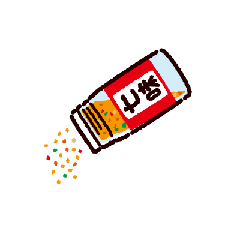

shichimi togarashi
Shichi-mi tōgarashi 七味唐辛子, or seven-flavor chili pepper, is a common Japanese spice mixture containing seven ingredients: chili pepper, ground sanshou, roasted orange peel, black sesame seeds, white sesame seeds, hemp seed, ground ginger, aonori and poppy seeds.